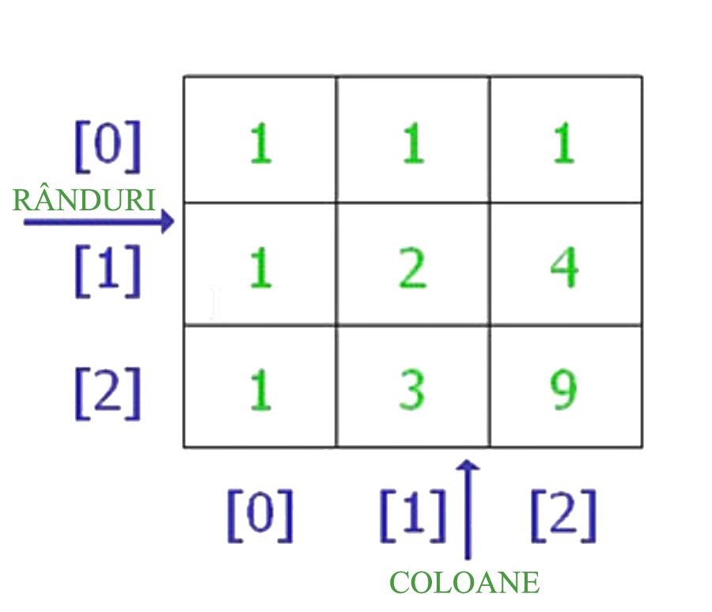

O matrice sau un tablou bidimensional, poate fi descris ca un "vector de vectori". De exemplu, o matrice poate fi imaginată ca un tabel format din elemente structurate pe linii si coloane, toate având același tip de date.
Declararea unei matrici denumite matriceExemplu cu elemente de tip întreg:
int matriceExemplu [3][5];